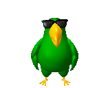
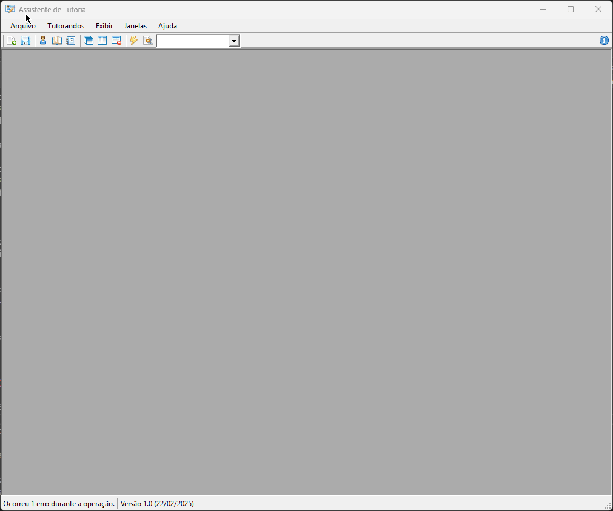
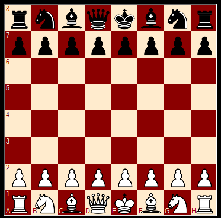

"Ela brilhou, pálida como a morte, / E eu ali, entregue à minha sorte. / Fiquei pensando como o mesmo luar / Que meu coração como a brisa tocou, / Era aquele que fazia brilhar / O recife, onde ela se espatifou."

O objetivo do TripleAgent é simular a funcionalidade da tecnologia Microsoft Agent em uma única biblioteca.
O repositório do projeto agora é público. Você pode checar ou contribuir acessando este link.
Este programa permitia que os professores gerenciassem os seus tutorandos, mantendo registro de seu desempenho e uma ata de reuniões.
O assistente foi feito para o uso interno de uma escola estadual, local onde se viu em uso por cerca de um ano. Infelizmente, por limites impostos aos computadores cedidos pelo governo estadual, ele não pôde ser completamente implantado como originalmente planejado.


Rodrigo foi um projeto de uma engine de xadrez que se desenvolveu durante o ano de 2022.
A engine era razoavelmente veloz porém cometia erros fatais de julgamento ao decorrer da partida.
"Deixem-me em paz! Não tardo, que eu nunca tardo... / E enquanto tarda o Abismo e o Silêncio quero estar sozinho!"
TalkAbout se refere a várias tentativas, todas malsucedidas até o momento, de sintetizar a fala humana com certo grau de fidelidade.
Como um agravante para o projeto, ele não fará uso de modelos preditivos, apoiando-se na síntese de formantes ou por difones.
Uma suíte de ferramentas capaz de destilar sentenças em português para conceitos unitários e, talvez, gerar orações a pertir desses conceitos.
Um transcritor de voz baseado em regras. Seu foco certamente não é acurácia ou velocidade, é um projeto feito para explorar o conceito e as tecnologias.
Uma camada de abstração para rodar extensões; macros; scripts ou plugins em várias plataformas, sem a necessidade de recompilação ou conhecimento prévio de arquitetura de destino.